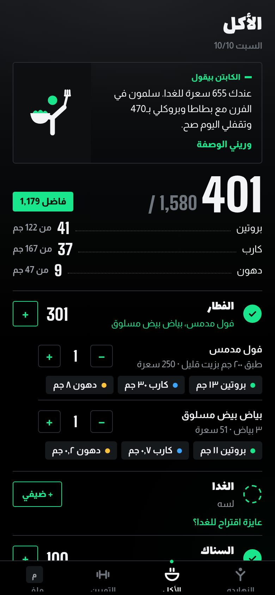
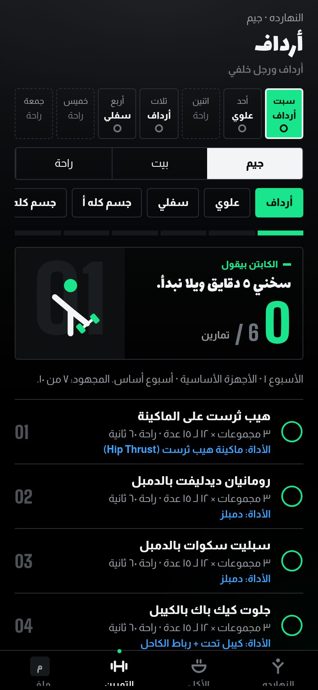
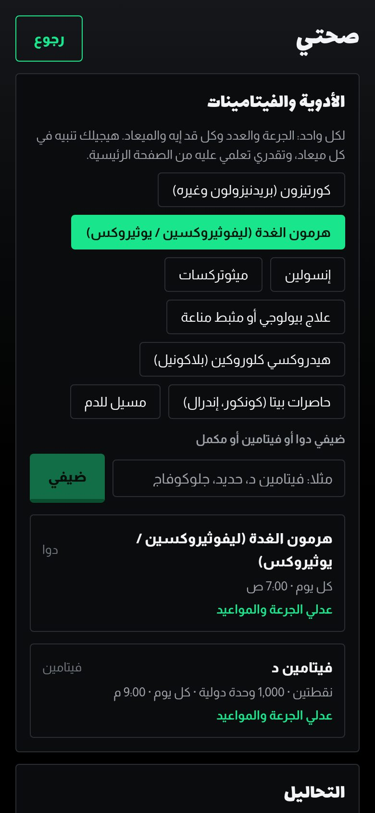

الأكل
الأكلة اللي اتاكلت بس هي اللي بتتحسب.
السعرات والبروتين محسوبين على الجسم والهدف، والأكل مصري حقيقي: فول وكشري وملوخية ومحشي.
- الوجبة بتتحسب لما يتعلم عليها، مش بالساعة
- بروتين وكارب ودهون لكل أكلة، وتنبيه لو فيها ملح كتير أو مش مناسبة للحالة الصحية
- أي أكلة مش في القايمة بتتدور أونلاين

التمرين
جيم، بيت، أو راحة. كل يوم ليه اختياره.
نظام من 9، وكل يوم جاهز بالتمارين والمجموعات والعدات.
- بديل بالجهاز وبديل بالأوزان الحرة لكل تمرين
- الوزن بالأرقام والعدات بزرار، وتايمر راحة
- برنامج بيزود الحمل أسبوع ورا أسبوع

الصحة والأدوية
بيفهم حالتك الصحية، وبيظبط كل حاجة عليها.
هاشيموتو والروماتويد والسكر والضغط وغيرهم، وأي حالة تانية تتكتب بالكلام.
- مواعيد الأدوية والفيتامينات بالجرعة والتكرار
- علامات توقف التمرين على حسب الحالة
- التحاليل وتقرير PDF للدكتور
